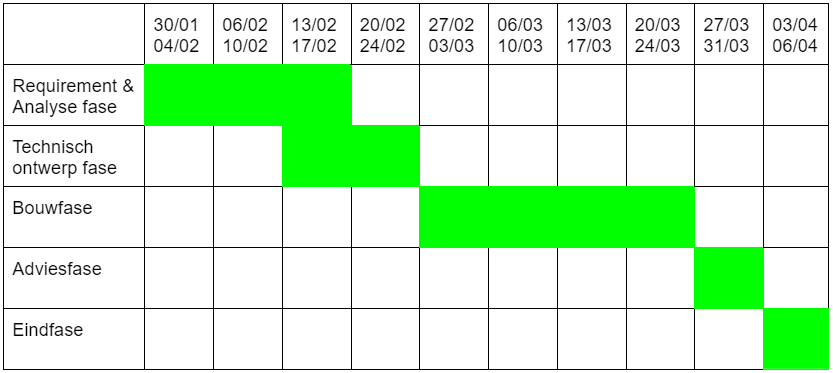

Professional Skills
Portofolio - Semester 2
Reflecteren | Deel 1.
Een bepaalde actie waar ik niet trots op ben, die ik heb gestart, is het in discussie gaan met een surveillant. Deze discussie vond plaats paar minuten voor het object georiënteerd programmeren examen. Doordat dit kleine, maar voor mij heftige, incident is gebeurd ben ik heel erg op mijn houding gaan letten. Mijn houding tegenover doecten, maar ook studenten.
Volgens het Johari-venster ben ik niet bewust op de manier hoe ik feedback/standpunten geef. Ik wordt echter wel bewuster van deze blinde plek. Dit komt doordat ik vaak in een discussies terecht kom, of grote meningsverschillen heb.
Een actie waar ik wel trots op ben, is het oriënteren op het beroepsveld. Tijdens de beroepsmarkt in het Atlas Theater ben ik langs 7 verschillende "bedrijven" gelopen. Aan de hand van een papier die ik kreeg bij aankomst, ontstonden een aantal vragen voor een paar bedrijven. Dit waren stukjes tekst waar ik verheldering op wou.
Een aantal bedrijven waar ik geïnteresseerd in was en nog steeds ben zijn: B&S King of Reach, nexler, SHINE Health. Illuminated.
Plan van aanpak
In het plan van aanpak van de derde periode is een gantchart ontstaan, met de projectgrenzen die zijn gesteld in hoofdstuk 4.
Hoofdstuk 4 - Projectgrenzen
In de eerste fase, de fase van requirements en analyse. Hierin wordt het plan van aanpak en requirements analyse opgesteld. Hierna volgt de fase van het technisch ontwerp. Als deze fases zijn afgerond naar de bouwfase waarin de robot klaar wordt gemaakt en geprogrammeerd voor de race. Hierna volgt de advies fase waarin het adviesverslag en het gespreksverslag wordt opgesteld. De laatste fase is de racedag waarin de robot het parkour gaat afleggen. Hierbij is het doel is met de snelste tijd te finishen.
Het project duurt 9 weken. In die negen weken staan een aantal deadlines (zie hoofdstuk 5), zodat het project op tijd afgerond wordt. De einddatum van het project is maandag 3 april 2023.
Hoofdstuk 5 - Tussenresultaten
1e mijlpaal, 13 - 16 februari In deze week moeten alle plannen afgerond zijn. Het gaat over het papierwerk rondom het project.
2e mijlpaal, 27 - 31 maart In deze week moet de software die ontwikkeld is in de week 4 getest worden. Alle drie de BattleBots moeten met hun taak kunnen beginnen. In de komende weken is er genoeg tijd om ervoor te zorgen dat de BattleBots hun taak perfect kunnen uitvoeren.
3e mijlpaal, 3 - 6 april In deze week worden de wedstrijden gegeven en is het dus belangrijk dat de BattleBots dit kunnen behalen.
Presenteren
De advertentie over TimeWise staat nog niet online. Deze knop wordt op 23.06.2023 actief.